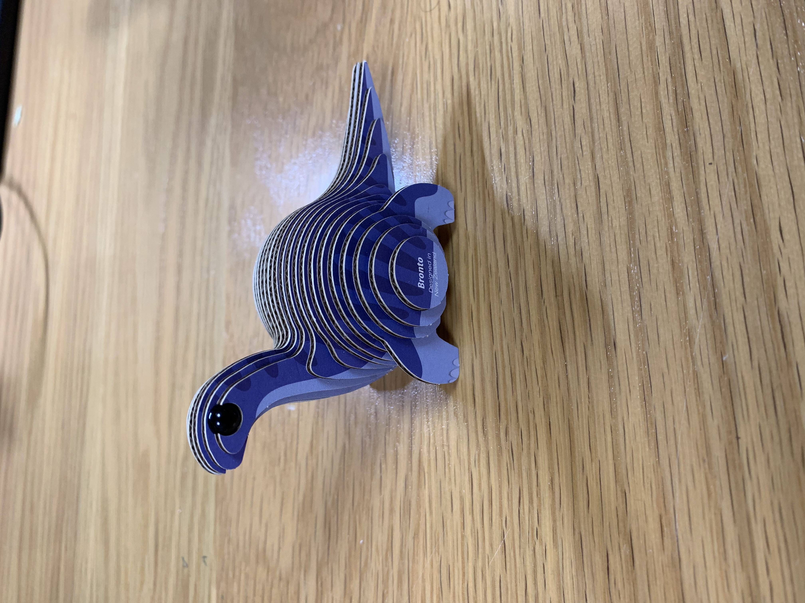

<br>
### Week 2: 2D Design and Cutting
This week's project was to create a press-fit construction kit. At first, I was inspired by this little guy, who lives on my desk:

This dino is made of cardboard pieces that are stuck together with glue, but I was considering making a press-fit kit that you could make different cats and dogs out of. However, I quickly realized that I do not currently have the Fusion 360 skills necessary to draw out all the pieces I'd need to make a convincing cat (or any mammal, for that matter). Instead, I pivoted to a new idea, still somewhat within the animal kingdom. I decided to make a press-fit coral reef kit, which would allow me to make fun, organic shapes without using that many different pieces.
I began by sketching out my idea of what a coral reef looks like. I then broke the initial sketch down into three separate pieces, which could be assembled together in different ways to look like a somewhat convincing coral reef. After sketching out those 2D shapes, I thought about different ways I could make the reef shapes link together to actually stand up. Adding two slots to the main piece would enable me to stick them together at right angles, creating a structure that has a stable base. My sketches for each part of this thought process are below (please excuse my sub-par drawing skills):
Once I had a general concept, I took my ideas to Fusion. It did not seem possible to make the organic shapes based on parameters, so I just sketched them out using control point splines. This method was best for me because I have some experience drawing things in Adobe Illustrator. Using control point splines felt very similar to drawing out curves using Illustrator's anchor points, so it wasn't too much of a headache to achieve these shapes.
With the shapes finished, I moved on to creating the parameters for the notches. I created four: one for notch width, one for notch height, one for kerf, and one for material width. I wrote the expressions for the parameters as follows:
<table>
<tr>
<td>Parameter</td>
<td>Expression</td>
</tr>
<tr>
<td>Kerf</td>
<td>0.5 mm</td>
</tr>
<tr>
<td>Material thickness</td>
<td>4.5 mm</td>
</tr>
<tr>
<td>Notch width</td>
<td>Material thickness - kerf</td>
</tr>
<tr>
<td>Notch height</td>
<td>39 mm/2 - kerf</td>
</tr>
</table>
Material thickness is simply a measure of how thick the material is. I measured the cardboard with calipers in several places, and the width is about 4.5 mm. For kerf, for the first round of test pieces, I guessed and set it as 0.5 mm. Notch width is calculated such that the actual notch size ends up being the width of the material. Finally, I wanted the notch height to be such that, when slotting two of the bigger pieces (the ones with three prongs) together, they would sit flush. Therefore, I used a construction line to figure out the height of the piece at the location at which I was placing the notch, then divided that height by two and subtracted kerf. The final Fusion drawing, with notches added, looks like this:
I exported this file as a .dxf and took it to the laser cutter. For the final kit, I'll cut several of each piece, but for now, I only cut one of each to test their ability to slot together. The default speed and power settings for cardboard didn't quite cut all the way through, but I was still able to punch out the pieces cleanly. Here they are!
Even though I just guessed the kerf, they fit together surprisingly well. I'm pretty happy with how it looks! The fit could be slightly tighter, though, so I'll decrease the kerf to 0.2 mm before cutting another test batch.
I decreased the kerf to 0.2 mm and cut another test batch of three pieces. Or rather, I tried to cut a test batch of three pieces, because I forgot to focus the laser the first time, so they didn't cut all the way through. Ibrahim helped me focus the laser, but they still didn't cut. After we messed with the speed and power settings two more times, the pieces finally came out nicely. We ended up using 28 for speed and 60 for power. They fit together very well! They also smell good (I am a weirdo who enjoys the smell of laser cut wood and paper products). However, the smallest piece is a little too small, making the thin edges flimsy. I re-drew that piece to make its base wider.
After re-designing the piece, I proceeded to cut a larger batch of the pieces using the 28 speed and 60 power setting on the laser. Assembling these is a lot of fun! Here are two example reefs I made with the kit:
If I were to do this project again, I might add an engraved texture on the pieces to make them look more like coral. Engraving lots of tiny circles all over the cardboard could acheive that look. I would also consider painting the cardboard coral reef colors. Finally, I might add some little fish or other sea creatures who could live among the coral. If I wind up having the time to make these modifications, then I'll package up the pieces and send them to my six-year-old sister, who I think would get a kick out of them.
Overall, this was a really fun project! I have some experience with the laser cutter, but the real challenge for me was using Fusion, which is very new to me. This was an excellent introduction to the software, which I'll continue exploring.
### Fun with Fusion
The other component of this week's project was to go through a Fusion tutorial and model some things. I started with the [tutorial](https://www.youtube.com/watch?v=vVFYrBClkPc) linked on the course site, which was helpful for basic sketching. I made these quick shapes while following along with that tutorial:
<img src="./Tutorial_sketches.png" alt="Some 2D sketches in Fusion 360" width="350"/>
After that, I wanted to model a cute mini storage box I have lying around my dorm. I forgot to take a picture of my exact box, but it looks similar to this one, with a hidden hinge. The hinge of my box is just a metal rod, which goes through the lid and box base.
I started by modeling all of the components: the lid, base, and rod. [This](https://www.youtube.com/watch?v=S6OUkn2Cksg&t=25s) tutorial was super helpful for figuring it out.
After that, I assembled the three components. I couldn't figure out how to get Fusion to display all three at the same time, something to work on for future models! Here's what it looks like put together:
I also couldn't quite figure out how to get the hinge joint to work in Fusion, so I'll also continue working on that. I might end up using this box as part of my final project (if I wind up going the music box route for the project), but even if not, this was a very useful exercise to gain more experience with Fusion.